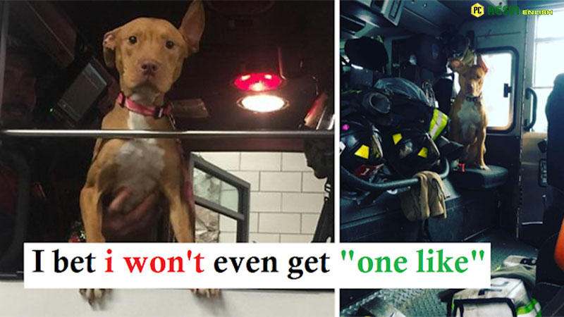

Dog Left Behind By Her Family Hangs Out With Firefighters All Day Now

Ashley’s previous owners virtually ever fed her, seldom took her outdoors, and eventually abandoned her.
The 1-year-old pit bull was rescued in January 2017 by Erica Mahnken, creator of No More Pain Rescue, and her boyfriend Michael Favor.

“We received a call from someone reporting that a couple was residing in an abandoned house. They didn’t have heat or power, and there was a dog in the house “Shortly after the rescue, Mahnken informed The Dodo.
The pair presumably departed when a snowfall came. “I think they went looking for a warm place to stay and left the dog behind,” Mahnken speculated. “So we rushed and retrieved her as soon as we got the phone call.”

Favor ordered Mahnken to remain in the car while he went inside to look for the dog. Later, he’d tell Mahnken about how horrible it was. “The house was frigid since there was no electricity,” Mahnken added.
Ashley, on the other hand, was undamaged, and when Favor walked her out, she looked like the happiest dog on the block.

“She came racing down, giddy,” Mahnken remarked. “She hopped into my car right away.”
Ashley was emaciated and frail. “Her ribs were all you could see since she was so thin. She was also 25 pounds underweight, according to the vet.”
Ashley also had cigarette burns on the top of her head, which they observed.

Because No More Pain Rescue does not have a physical shelter, Mahnken and Favor had to find Ashley a foster home right away. They knew there used to be a dog at the Fort Pitt station because they had pals in the New York City Fire Department (FDNY). As a result, Mahnken and Favor requested the firemen to keep Ashley until they could find her a suitable home.

Ashley appeared to be content with the situation.
“Her tail was wagging as soon as she stepped into the firehouse, and she was kissing and welcoming everyone,” Mahnken added. “She was overjoyed. You wouldn’t anticipate it coming from her background. You’d think she’d be a bit nervous, but she wasn’t in the least.”
Not unexpectedly, the firefighting team contacted Mahnken a few days later, requesting that Ashley be kept.

“‘We’re going to adopt her,’ they said. We are really enamored with her. ‘She feels at ease here,’ says the narrator “Mahnken said. “So I was ecstatic. And I knew as soon as I walked her in there that she belonged there.”
Ashley now lives at the firehouse full-time.

“She’s always on the go — she goes on shorter runs with them, she rides in the fire truck with them,” Mahnken explained. “They take her for a stroll approximately 30 times a day. They take her up on the roof to play with her. She’s always watching them dine in the kitchen. She has a never-ending supply of snacks. She’s living the high life over there.”

According to Mahnken, Ashley even has a seat on the fire engine.